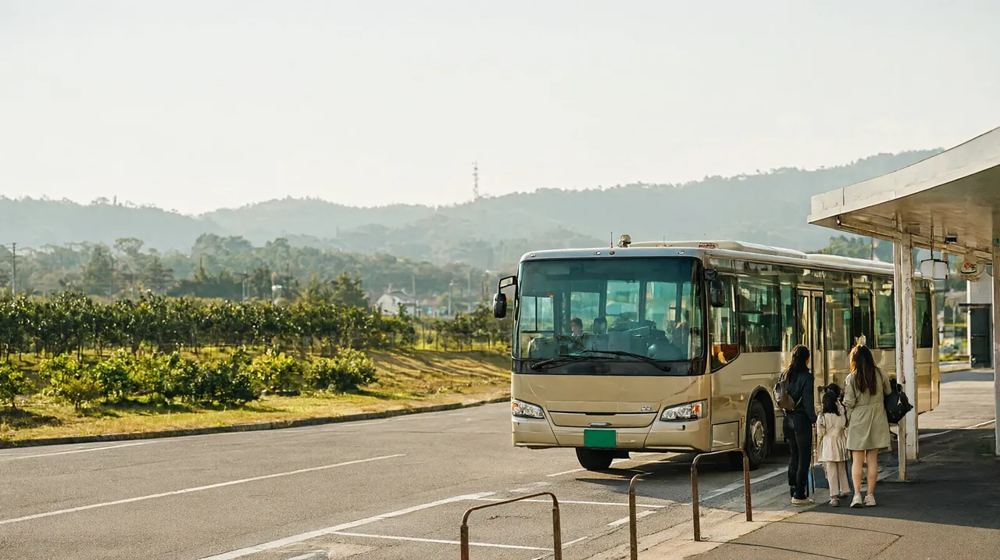

마쓰야마공항에서 시내·도고온천까지: 리무진 버스, 택시, 렌터카 비교
공항에서 도고온천까지 버스 약 40분, 택시 약 26분. 시간표 확인 결과

인천에서 마쓰야마로 오는 직항(동계, 2026년 10월 25일부터)은 08:35와 14:40에 도착합니다 (마쓰야마공항 국제선 진흥협의회). 이 글은 두 시각에 맞는 이동 방법을 가족(성인 2명 + 초등학생 1명) 기준으로 정리했습니다.
선택지 비교
| 수단 | 소요시간 | 요금 | 막차 | 추천 대상 |
|---|---|---|---|---|
| 이요테쓰 리무진 버스 (도고온천역 앞 직행) | 약 40분 | 어른 현금 1,200엔, IC카드 1,180엔. 어린이는 절반이라 590엔. 가족 3인 약 2,950엔 (약 2만 5천원) | 공항 출발 21:35 (도고온천역 앞 22:15 도착, 이요테쓰 시간표) | 비용을 아끼고 싶은 가족 |
| 리무진 버스로 JR 마쓰야마역 앞, 이후 시내 전차 | 버스 약 15분 + 전차 약 10분 + 대기 | 버스 980엔(IC카드) + 전차 250엔 = 어른 1,230엔 | 버스 막차는 위와 같음 | 직행 버스 시각이 맞지 않을 때 (직행이 더 쌈) |
| 택시 | 약 26분 (나비타임 계산, 비공식). 다른 민간 안내는 20~30분 | 약 3,300엔 (약 2만 8천원). 다른 민간 안내는 3,000~4,000엔. 22시~5시는 할증 | 해당없음 | 짐이 많거나 늦게 도착, 대기 없이 숙소 앞까지 |
| 렌터카 | 약 25~40분 (공항 공식 안내는 약 40분) | 확인 필요 | 해당없음 | 도베 동물원, 우치코 등 근교를 자주 가는 일정 |
택시는 거리 기준 계산이라 도쿄 요금 체계를 적용한 값입니다. 실제 마쓰야마 요금과 다를 수 있으니 참고만 하세요 (나비타임, 트래블리스트는 모두 민간 안내이며 비공식).
가족 3인 기준으로 비교하면 버스(약 2,950엔)와 택시(약 3,300엔)의 차이가 작습니다. 비용 차이가 적으니 도착 시각에 맞는 버스가 없을 때는 택시가 현실적입니다.
서울편 도착 시각에 맞는 버스 (이번에 확인한 내용)
이요테쓰 공식 시간표(2026년 10월 25일~11월 30일 적용)의 공항 출발 표는 국내선 도착편에 맞춘 시각만 실려 있고, 표 아래에 모든 항공기를 싣지는 않았다는 주의가 있습니다. 서울편(제주항공 등) 전용 행은 찾지 못했습니다. 그래서 서울편 도착에 맞춘 버스가 따로 편성되는지는 확인 필요로 남깁니다. 아래는 시간표에 실제로 있는 도고온천역 앞 도착 버스입니다.
08:35 도착편 (입국 심사와 짐 수령에 35~45분 걸린다고 가정하면 09:10~09:20 이후 탑승 가능)
| 공항 출발 | 연계 국내선 도착 | 도고온천역 앞 도착 | 비고 |
|---|---|---|---|
| 08:45 | 중부발 08:35 도착 | 09:25 | 서울편 도착 10분 뒤라 사실상 못 탐 |
| 09:10 | 하네다발 08:50 도착 | 09:50 | 현실적인 첫 후보 |
| 09:20 | 하네다발 09:05 도착 | 10:00 | 위 버스를 놓쳤을 때 |
| 09:40 | 나리타발 09:30 도착 | 10:20 | 그 다음 버스 |
14:40 도착편 (같은 가정으로 15:20 전후 탑승 가능)
| 공항 출발 | 연계 국내선 도착 | 도고온천역 앞 도착 | 비고 |
|---|---|---|---|
| 15:00 | 나하발 14:50 도착 | 15:40 | 도착 20분 뒤라 빠듯함 |
| 15:40 | 나리타발 15:30 도착 | 16:20 | 현실적인 후보 |
| 16:10 | 하네다발 15:50 도착 | 16:50 | 위 버스를 놓쳤을 때 |
- 버스는 항공기 도착에 맞춰 출발 시각이 조금 바뀔 수 있다고 안내됩니다. 항공기 지연이 있으면 도착을 기다리고, 큰 지연이면 다음 버스를 이용합니다 (이요테쓰).
- 서울편에 맞춘 임시 편성이 있는지는 이요테쓰 문의(전화 089-972-2511, 일본어)로 확인할 수 있습니다.
- 도고온천역 앞까지 가는 버스는 일부 시각만 해당합니다. 표에 도고온천역 앞 칸이 비어 있는 버스는 마쓰야마시역까지만 갑니다.
공항 출발 막차와 시내에서 공항으로 가는 시각
| 구분 | 내용 | 출처 |
|---|---|---|
| 공항 출발 마지막 버스 | 21:35 (JR 마쓰야마역 앞 21:50, 도고온천역 앞 22:15). 21:30 출발 버스도 도고온천역 앞 22:10 도착 | 이요테쓰, 10월 25일~11월 30일 시간표 |
| 직전 시간표(10월 1~24일) 막차 | 21:30 출발 | 이요테쓰 |
| 시내에서 공항행 첫 버스 | 도고온천역 앞 06:02 출발, 공항 06:40 도착 | 이요테쓰 |
| 도고온천역 앞 출발 마지막 공항행 | 18:22 출발, 공항 19:00 도착 | 이요테쓰 |
귀국편이 09:35 출발이면 도고온천역 앞 07:02 출발(공항 07:40)이 무난하고, 15:40 출발이면 13:07 출발(공항 13:45)이 안전합니다. 국제선 수속 마감은 항공사에 확인이 필요합니다.
추천
- 도착 08:35 (오전): 입국 후 09:10 또는 09:20 버스로 도고온천역 앞까지 갑니다. 놓치면 택시가 간편합니다.
- 도착 14:40 (오후): 15:40 버스를 기본으로 하고, 오래 기다리기 싫으면 택시로 갑니다. 공항에서 쉬는 시간에는 간식을 먹을 수 있습니다.
- 근교(우치코, 도베 동물원)를 많이 다니려면 렌터카도 후보이지만, 느린 일정이라면 버스와 전차만으로 충분합니다. 렌터카 요금과 국제운전면허 필요 여부는 확인 필요입니다.
- 짐이 많으면 숙소에서 택시를 부르는 방법이 있습니다.
주의
- 리무진 버스는 예약을 받지 않고 선착순입니다. 요금은 내릴 때 냅니다 (이요테쓰).
- 어른 1명이 동반하는 유아는 1명까지 무료입니다 (이요테쓰).
- 시내 정류장 사이의 승하차는 안 됩니다. 공항에서만 타고 내립니다.
- 표에 없는 편을 놓치지 않도록 짐을 찾은 뒤 바로 버스 승강장으로 갑니다.
- 렌터카 카운터는 1층에 있다는 민간 안내가 있습니다 (비공식, 확인 필요).
- 요금은 2026년 10월 기준 공식 운임이며, 환율 100엔=853.02원(한국수출입은행 매매기준율, 2026-10-16 고시)으로 원화를 환산한 값은 약입니다.
확인 필요 항목
- 서울편 도착(08:35, 14:40)에 맞춘 버스 편성 여부
- 택시의 실제 요금과 예약 방법 (이 글의 금액은 비공식 계산. 시도: 마쓰야마공항 교통 안내 페이지, 택시 요금 기재를 읽지 못함)
- 렌터카 요금, 국제운전면허 필요 여부, 도고온천 숙소 주차
- 국제선 수속 마감 시각 (항공사마다 다르다고 마쓰야마공항 공식 안내에 적혀 있어 항공사 확인 필요)
- 입국 심사와 짐 수령에 걸리는 시간 (35~45분은 가정치)
공식 출처
- 이요테쓰 공항 리무진 버스 (10월 1~24일): https://www.iyotetsu.co.jp/bus/limousine/airport/
- 이요테쓰 공항 리무진 버스 (10월 25일~11월 30일): https://www.iyotetsu.co.jp/bus/limousine/airport/?t=202611
- 마쓰야마공항 국제선 진흥협의회: https://www.matsuyama-air-int.jp/2026/10/02/post-7219
- 비공식 참고: 나비타임 택시 요금, 트래블리스트, 에히메 여행 수첩, 티켓 관광 기사